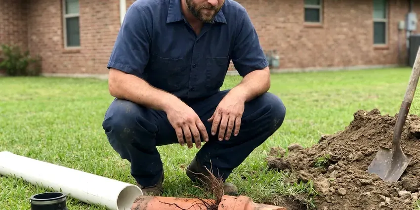

Well Pump Repair in Ranson, WV
Is your well pump failing in Ranson, WV? GJK Plumbing offers professional repair services to get your water flowing steadily again.
- Fast Well Pump Diagnostics
- Quality Part Replacement
- Experienced Pump Technicians
- Experienced Local Plumbers

Expert Well Pump Repair Services in Ranson, WV.
Call now and we will troubleshoot your pump, tank and controls as soon as possible.
Expert Well Pump Repair Services in Ranson, WV
GJK Plumbing understands that a well is your only water source, so a failure means no showers, no toilets and no irrigation. We put first no-water calls and carry parts from Franklin Electric, Grundfos, Goulds and Well-X-Trol to restore service quickly.
Our expertise includes:
- Pressure Tank and Switch Adjustments
- Control Box and Wiring Fixes
- Pressure Tank and Switch Diagnosis

Additional Plumbing Repair Services in Ranson, WV
We offer expert plumbing repair services across Ranson, WV to fix leaks, restore flow, and keep your system running smoothly.


Customers
Why Choose GJK Plumbing for Well Pump Repair in Ranson, WV?
Well problems can look alike from the faucet, but the cause might be a $40 switch or a pump hundreds of feet down. We test methodically so you only pay for what actually failed.
- Genuine Parts, We use only quality, durable replacement parts to ensure the longevity of your well pump repair.
- Trained Technicians, Our plumbers are certified and regularly trained on current well pump technologies and repair techniques.
- Transparent Pricing, You'll receive a firm, upfront estimate before any work begins, with no hidden fees.
Citywide Coverage
Our plumbers cover the outlying parts of Ranson where homes rely on private wells. We know how to access well heads on rural lots, horse properties and hillside homes as well.
Experienced Team
Each technician at GJK Plumbing is not just a plumber, but a well pump specialist. They undergo ongoing training on various well pump brands and models, including Franklin Electric, Grundfos, and Sta-Rite. Their hands-on experience in the field, especially with West Virginia water systems, translates to efficient and reliable well pump repair services for our Ranson customers.
Safety-First Approach
Safety is paramount in all our well pump repair work. Our technicians strictly follow all local and state plumbing codes in West Virginia, ensuring that every repair is not only effective but also compliant and safe. We take precautions to protect your property and ensure the proper functioning of electrical components associated with your well pump system.
Trusted Certified Ranson Plumbing Services Professionals
At GJK Plumbing, we take pride in providing certified plumbing services throughout Ranson, WV. Backed by leading industry credentials, our experienced plumbers combine technical skill with genuine customer care. Whether it is repair, installation, or maintenance, we follow strict safety and quality standards to deliver long-lasting results you can trust.
Call Us Now PHCC Plumbing Contractor Recognition
PHCC Plumbing Contractor Recognition Better Business Bureau (BBB) Accreditation
Better Business Bureau (BBB) Accreditation Angi Certified Pro
Angi Certified Pro ISO 9001 Quality Management Certification
ISO 9001 Quality Management CertificationExpert Well Pump Repair Services in Ranson, WV
Emergency Well Pump Repair in Ranson
When your well pump suddenly stops working, you need fast help. GJK Plumbing offers emergency well pump repair services in Ranson to restore your water supply as fast as possible. We understand the urgency of having no water and fast-track these calls, sending out skilled technicians equipped to handle critical pump failures. Our goal is to minimize your downtime and get your household back to normal without delay.

Jet Pump Repair in Ranson, WV
Jet pumps, typically installed above ground, are often used for shallower wells or as booster pumps. Typical issues include loss of prime, seal leaks, or motor wear. We troubleshoot problems like air in the lines, clogged foot valves, or faulty pressure switches. Our team in Ranson is skilled at restoring prime and replacing worn components to get your jet pump operating smoothly again, a frequent need where water levels rise and fall.
Grundfos Well Pump Repair in Ranson
Grundfos pumps are widely used for their energy efficiency and advanced technology. Our team is trained in the specifics of Grundfos well pump diagnosis and repair, including their variable speed drive systems. We address typical problems like sensor failures, motor issues, or control system malfunctions. Count on GJK Plumbing for focused service that maintains the performance of your Grundfos well pump in Ranson, WV.
Well Pump Repair vs Replacement Cost in Ranson, WV
Control and pressure switch repairs often cost $150 to $500, while a pressure tank replacement typically runs $600 to $1,500. Pulling and replacing a submersible pump can range from $1,800 to $5,000 or more, depending on depth, horsepower and wire. If your pump is older and already needs pulling, replacing it at the same time can save a second pull later. We lay out both options with honest numbers.
Pressure Switch Replacement in Ranson
The pressure switch tells the pump when to start and stop. Pitted contacts, clogged sensing tubes and insect damage are common causes of failure. We replace the switch, clean or replace the tube and set the cut-in and cut-out pressures to match your tank. This is one of the most affordable well repairs.
Well Pump Maintenance & Repair Cost Comparison in Ranson, WV
Investing in regular well pump maintenance can frequently prevent costly emergency repairs. While an average well pump repair in Ranson might range from $400 to $1,500 depending on the complexity and parts needed, preventive checks are usually much less. GJK Plumbing provides clear, upfront pricing for both repair and maintenance services, helping you make informed decisions to optimize your well system's longevity and performance.
Diagnosing Low Water Pressure in Ranson
Low water pressure from a well system can be a frustrating problem, often indicating issues beyond just the pump itself. This could be due to a failing pressure switch, a partially clogged well screen, a leak in the supply line, or even a pump that is no longer meeting demand. Our team conducts thorough diagnostics to pinpoint the exact cause of low pressure in your Ranson home, delivering a targeted and effective repair solution.

Well Pump Pressure Tank Issues in Ranson
The pressure tank works together with your well pump to maintain consistent water pressure and reduce pump cycling. A waterlogged tank, a ruptured diaphragm, or a faulty air valve can cause rapid pump cycling, fluctuating water pressure, or even no water at all. Our team accurately diagnoses pressure tank problems and performs necessary repairs or replacements. We make sure your tank is properly sized and charged for optimal system performance in Ranson.
Reliable Well Pump Repair Near Me in Ranson, WV
Don't search endlessly for well pump repair near me when you're facing a water emergency. GJK Plumbing is well established in the Ranson community and committed to providing prompt, professional service. We understand the urgency of well pump failures and work to be the fastest, most reliable option for homeowners in Ranson.
Local knowledge helps with wells because water levels, sand content and mineral scale vary from one area to the next. Our technicians have seen what works in the wells in the area. That experience leads to better pump choices and extended service life.
GJK Plumbing at a Glance
- Licensed and insured plumbers serving Ranson, WV
- Same-day appointments and 24/7 emergency response
- Clear written estimates, no hidden fees
- 4.8-star rated by 832+ West Virginia customers
Ranson Map
Ranson Information
- Population
- 5,699
- Area codes
- Local
- Service area
- Ranson and communities within 40 miles
- Nearby
- Charles Town, Martinsburg, Cheat Lake, Brookhaven
Flooded basements and sewer backups are common after major storms, so backwater valves and sump pumps are worthwhile upgrades. Homes on private wells around Ranson, WV depend on pumps that face sand, mineral scale and power surges, so fast well pump repair keeps a household from going without water.
Expert Services
Trust our professionals for reliable GJK Plumbing solutions in Ranson, WV.
Our Specialized Plumbing Services in Ranson, WV
At GJK Plumbing, we provide a complete range of plumbing services across Ranson, WV. From leak detection to full system installations, our team ensures fast, precise, and affordable service for both residential and commercial properties. Explore our core services below:


How Our Well Pump Repair Process Works in Ranson, WV
At GJK Plumbing, we follow a simple, step-by-step approach to well pump repair, from initial diagnosis to final testing.
Request a Quote
Call (681) 223-3607 and describe your symptoms, such as no water, low pressure or a pump that will not shut off. We put first no-water calls and schedule the fastest available visit.
Test the System
Your technician checks power, the pressure switch, control box and tank, then tests the pump motor and wiring. You get a plain explanation and a flat price before any parts are replaced.
Repair and Restore
We repair or replace the failed component and set pressures correctly. The system is run, checked for leaks and the well is disinfected when the pump has been pulled.
Frequently Asked Questions About Well Pump Repair in Ranson
The cost of well pump repair in Ranson can vary significantly, typically ranging from $300 for minor repairs like a pressure switch replacement to over $2,000 for complex issues such as replacing a submersible pump motor. Factors include the type of pump, the depth of the well, and the specific parts needed. We provide a detailed estimate after diagnosing the problem.
Yes. Our labor is warrantied, and new pumps, motors and tanks carry manufacturer warranties that frequently run several years. We explain the coverage on your invoice.
For most standard well pump repairs, a permit is usually not required in Ranson, WV. However, for major replacements or new installations, permits may be necessary to ensure compliance with local plumbing and electrical codes. We will let you know if a permit is needed for your specific situation.
Typical signs include no water, inconsistent water pressure, air sputtering from faucets, strange noises coming from the well or pressure tank, or the pump running constantly. If you notice any of these, it's smart to call for a professional inspection.
Regular maintenance is essential. This includes annual inspections, checking the pressure tank's air charge, ensuring proper well cap sealing, and being mindful of your water usage. Avoiding continuous short cycling of the pump can also extend its life.
Yes. Lightning can damage control boxes, capacitors, pressure switches and pump motors. Flooded basements and sewer backups are common after major storms, so backwater valves and sump pumps are worthwhile upgrades. A well surge arrestor can reduce the risk.
Yes, GJK Plumbing stands behind its work. We offer warranties on both parts and labor for our well pump repairs. Full warranty details will be provided with your estimate, so you can feel confident about the longevity of our service.
GJK Plumbing services all major well pump brands, including but not limited to Goulds, Grundfos, Franklin Electric, Myers, and Sta-Rite. Our technicians are trained and equipped to work on a wide variety of models and system types.
What People Are Saying About Our Plumbing Experts?

Daniel K.
A pipe burst at 11 pm and they actually answered. The plumber showed up within the hour, shut everything down, and had us back to normal the next morning. Could not ask for more.
Emergency Plumbing · Brookhaven, WV
James P.
Our commercial plumbing system had a leak under the sink, and GJK Plumbing handled it professionally. The plumbers arrived quickly and restored everything without disruption to our customers.
Commercial Plumbing · Charles Town, WV
Laura S.
I scheduled a water heater replacement, and the team made the process smooth and affordable. The new unit works perfectly, and they cleaned up after completing the job.
Water Heater Replacement · Morgantown, WV
Mark T.
When our office needed drain cleaning, GJK Plumbing provided quick, reliable service. The plumber arrived on time and made sure every drain flowed perfectly before leaving. Very satisfied.
Drain Cleaning · Brookhaven, WVSofia M.
Two new toilets installed in one visit, no mess left behind, and the tech even adjusted a faucet he noticed was dripping. Fair pricing and really friendly.
Toilet Installation · Cheat Lake, WVRobert G.
The trenchless sewer replacement saved our front yard. They walked us through the camera inspection footage first so we knew exactly what we were paying for.
Sewer Line Replacement · Elkins, WV